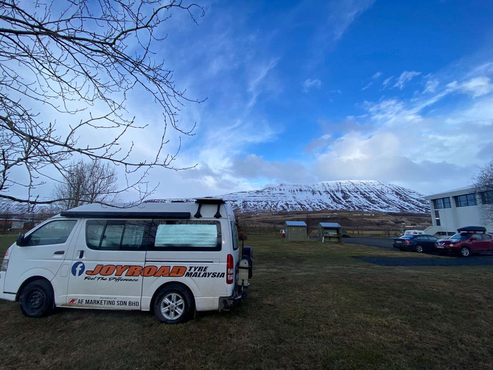
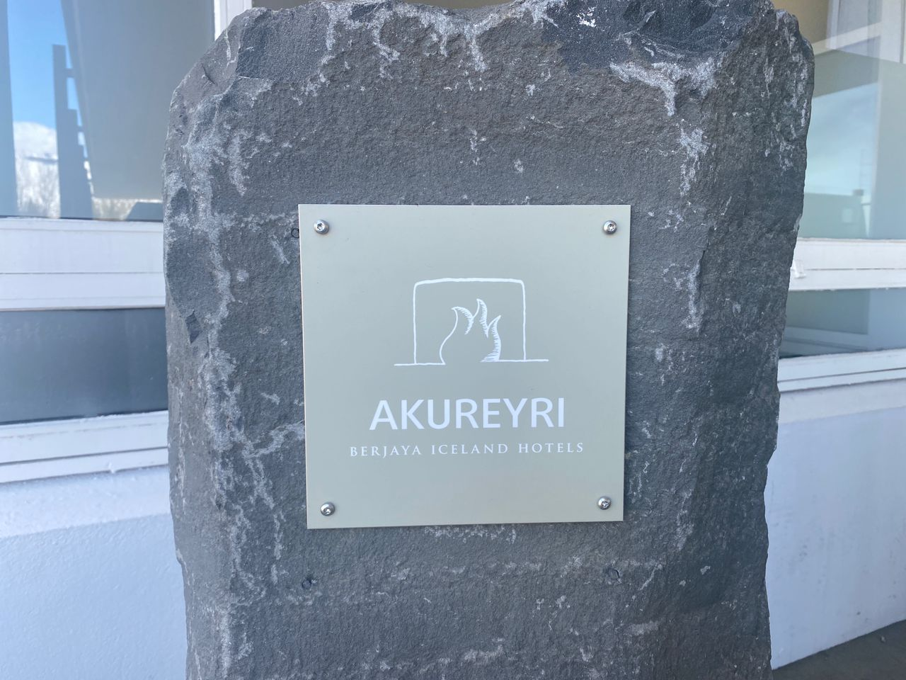

Real Story · 中文
7/5 sleeping area at Sundlaug Eyjafjarðarsveitar.
7 May 2024，我在 Akureyri 一带， sleeping area at Sundlaug Eyjafjarðarsveitar， also known as Sundlaugin Hrafnagili。
Toyotaki 停在这里，旁边是 Iceland 的山。 到了北边之后，Iceland 的感觉又变了一层： 更安静、更宽、更像一个冷冷的 open world。

Summer Ice
夏天的冰山长这样。
在 Akureyri 附近， 我看到夏天的冰山长这样。 明明已经是 May， 但是山上还是一条一条的雪。
对来自 Malaysia 的我来说， 这种 “summer but still ice” 的画面很特别。 Iceland 的季节，不是我们平时想象的那种季节。
Malaysia in Iceland
Berjaya Hotel in Iceland.
在 Akureyri，我看到 Berjaya Hotel in Iceland。 因为 Berjaya Group 是 Malaysia 很成功的 business giant， 他们在 Iceland 也有 hotel。
在那么远的 Iceland 看到一个熟悉的 Malaysian business name， 感觉很奇妙。 就像 Malaysia 的一个小影子， 出现在北大西洋的岛上。

Love Traffic Light
Akureyri 的爱心交通灯 — 谁知道它背后的故事？
在 Akureyri，我看到了爱心交通灯。 红灯不是普通圆形，而是 heart shape。
谁知道它背后的故事？ 这个城市把一个普通交通灯变成了一个小小的温柔符号。 在那么冷的地方，看到一个 red heart traffic light， 会觉得很可爱。
English Memory Summary
Small surprises in northern Iceland.
On 7 May 2024, Tuzi stayed near Sundlaug Eyjafjarðarsveitar / Sundlaugin Hrafnagili in the Akureyri area. Around Akureyri, she saw summer snow mountains, Berjaya Hotel signs that connected Iceland back to Malaysia, and the famous love traffic light.
These were small fragments, but together they made Akureyri memorable: cold mountains, a Malaysian business name far from home, and a traffic light shaped like love.
Heart Statement
在很远的地方，看见一点 Malaysia，也看见一颗红色的心。
Akureyri gave me summer ice, a Malaysian name in Iceland, and a traffic light that turned waiting into love.